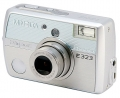
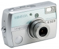
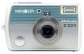
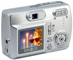

器材库 > 不可换镜头数码相机 > Dimage E323

规格总览
发布日期
2003-08-07
影像规格
影像传感器
CCD
影像传感器尺寸
1/2.7英寸
总像素
330万
有效像素
320万
静态图像尺寸
2880×2160
静态图像格式
JPEG
画幅比
4:3
镜头和对焦
镜头结构
7片/6组
非球面镜片
4片
焦距
5.6mm-16.8mm
等效35mm画幅焦距
36mm-108mm
最大光圈
2.8-4.9
光学变焦
3倍
数码变焦
4倍
最近对焦距离
广角50cm, 微距15cm
曝光控制
测光模式
多分区评价测光
曝光模式
P（程序自动曝光）
场景模式
全自动、运动、肖像、风景、夜景、化妆、修长
ISO感光度
自动
白平衡
日光, 阴天, 自动, 钨丝灯, 日光灯, 预设白平衡
自拍
10秒, 2秒
闪光灯
内置闪光灯
固定
闪光模式
自动
取景规格
取景器
光学取景器
LCD类型
彩色TFT LCD
LCD尺寸
1.6英寸
文件输入/输出
存储卡
SD/SDHC
数据接口
USB
视频/音频接口
AV 输出
电源
电池
2节5号电池
外观
颜色
银色
尺寸
99×62×34.5mm
重量
145g
d72005-09-02 09:592.81 分
操作性 3.00功能性 2.00美观性 2.00趣味性 2.00耐用性 3.50性价比 4.50解像力 2.50色彩还原 3.00
cnbc2005-08-30 22:204.13 分
操作性 4.50功能性 3.50美观性 4.00趣味性 4.00耐用性 4.00性价比 5.00解像力 4.00色彩还原 4.00
产品图 / 样片
Dimage E323

Dimage E323

Dimage E323

Dimage E323
评测 / 相关文章
该产品暂无存档的评测文章